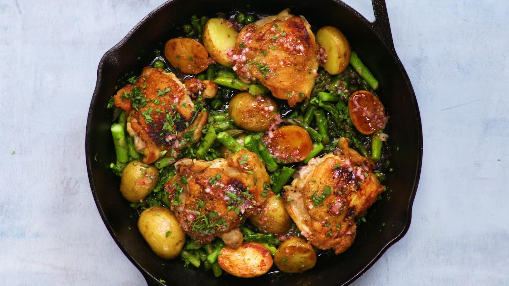

Main Course: Crispy Chicken Thighs w/ Spring Vegetables

Description
The rich and zesty pan sauce is what makes this simple, seasonal supper something you’ll want to eat again and
again. It's easy to make, light yet filling, and full of delicious and complimentary flavors! It will have your
taste buds craving more!
A fantastic, quick, and easy recipe to make your party guests ask where you went to culinary school!
Ingredients
- 8 Small Chicken Thighs (Bone-In/Skin-On)
- 1 Teaspoon of Freshly Ground Black Pepper
- 1 Pound of Asparagus
- 1 Pound of Baby Potatoes
- 1 Bunch of Radishes
- 2 1/2 Tablespoons of Vegetable Oil
- 3 Cloves of Finely Chopped Garlic
- 1 Tablespoon of Anchovy Paste
- 1 Stick of Cold Butter
- 1 Tablespoon of Fresh Lemon Juice
- 1 Tablespoon of Freshly Chopped Parsley
Steps
- Preheat oven to 450°F. Using kitchen shears, remove bones from chicken thighs, keeping skin and flesh
intact; discard bones. Season chicken all over with salt and pepper.
- Toss asparagus, potatoes, radishes, oil, and a little salt and pepper in a large
bowl. Transfer everything but the asparagus to a rimmed baking sheet and roast 15 minutes.
- Meanwhile, grease another rimmed baking sheet with a little oil. Heat 1 tsp. oil in a large skillet
over medium-high heat. Working in batches, sear chicken skin side down until skin is crisp and golden brown,
approximately 5–7
minutes. Transfer skin side up to prepared sheet. After all chicken is seared (reserve fat in skillet),
transfer baking sheet to oven and roast until chicken is cooked though, approximately 8–10 minutes.
- When you open oven to roast chicken, remove baking sheet with vegetables, arrange asparagus over potatoes
and radishes, then continue to roast until asparagus is crisp-tender and potatoes and radishes are well
browned and tender, approximately 8–10 minutes more (it should take the same amount of time to finish as the
chicken).
- Meanwhile, carefully pour off excess fat from reserved skillet, leaving browned bits on the bottom. Add
garlic, anchovy paste, and 1 Tbsp. butter to skillet and cook over medium heat until garlic is softened and
fragrant, about 1 minute. Remove pan from heat and stir in lemon juice. Add
remaining butter one piece at a time, swirling and stirring after each addition to fully emulsify sauce.
Stir in 1 Tbsp. parsley.
- Transfer chicken and vegetables to a platter, then pour sauce over. Top with more parsley before serving.